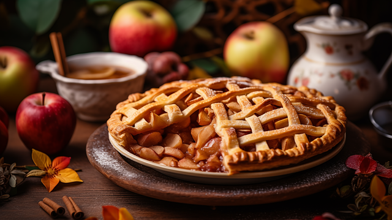

Apple Pie

Description
Traditional recipe that you can adapt with delicious flavours like cinnamon and cloves.
Ingredients
- 8 oz Plain Flour
- 4 oz Butter
- 8 tblsp very cold water
- 1 lb Cooking apples
- 4 oz Sugar
Steps
- Peel, core and slice the apples
- Put the apple slices and the sugar in a heavy bottomed pan and cook on a low heat until sugar has disolved
- Rub butter into flour until it resembles course breadcrumbs
- Stir the water through the 'breadcrumbs' until it begins to come together, then knead lightly
- Add a little more water if necessary, but avoid making the pastry slimy or sticky
Home